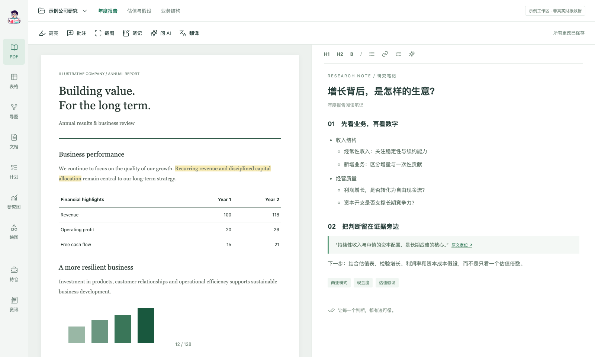

阅读原文，也留下自己的理解
在 PDF 里高亮、批注、记笔记。需要时，让 AI 帮你整理层次、提炼关键数字，或辅助理解专业英文。
让每一个投资判断，
都有据可循。
从一份财报，到自己的投资理解。
把资料、笔记、模型与持仓，连成一条研究脉络。

资料不是研究的终点。让阅读时的发现、计算中的假设和最后的判断，留在同一个项目里。
在 PDF 里高亮、批注、记笔记。需要时，让 AI 帮你整理层次、提炼关键数字，或辅助理解专业英文。
用文档整理观点，用表格构建估值与分析模型。让定性的理解与定量的推演相互检验。
导图梳理业务，时间轴追踪变化，鱼骨图拆解原因。把待验证的问题，变成可以持续跟进的事项。
按「用户 → 项目 → 资产」组织研究。每份笔记、每张表和每幅图，都能回到它所属的研究上下文。
关注什么、为什么持有、哪些假设正在变化。让日常跟踪与深入研究保持连接。
集中查看持仓与资产统计，带着真实的投资问题，回到公司和业务本身。
把关注公司的动态放在研究工作台，少一些在不同信息入口之间往返。
用表格推演估值，用研究图拆解业务与财务关系，让模型服务于判断。
围绕当前资料提问，整理选中的内容，辅助表格与导图操作。也可以通过外部 Agent 与 Skill，把你自己的研究方法带进来。
了解 AI 协作长期积累，独立判断。